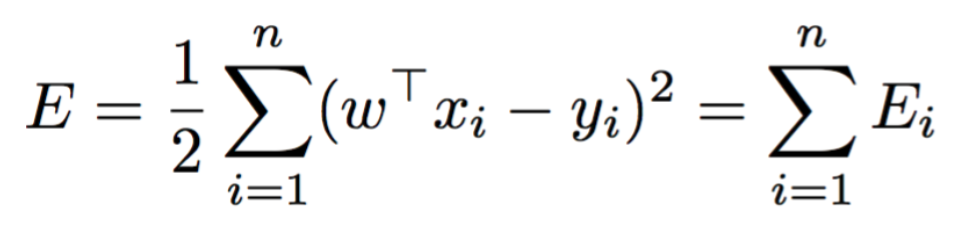

Linear regression is a supervised machine learning algorithm. Linear regression is useful for modelling the relationships between a dependent variable and one or several independent variables. The purpose of linear regression is to discover (and quantify the strength of) significant correlations between dependent and independent variables.
In-depth Look into Linear Regression
What is Linear Regression?
Linear Regression aims to estimate by a linear function of the data
:
In the image below, the example shows the inputted data is two-dimensional
, using the parameters
,
,
as the estimates.

Linear Regression's formula can be generalised into . where
. We add 1 to the first component of the
data so that we can then write the linear equation as a dot product between two vectors. Also the T denotes
transpose, which will turn a row vector into a column vector.
The Stages of Linear Regression
- Select the required number of features.
- Select the cost function to use. The most common method used is the cost function Least Mean Squares (LMS). LMS aims to minimise the sum of total errors. 
- Selecting the required method, depending on if its non-linear, Polynomial or Gaussian basis.
- Fit the data to the model.
Linear Regression in Action